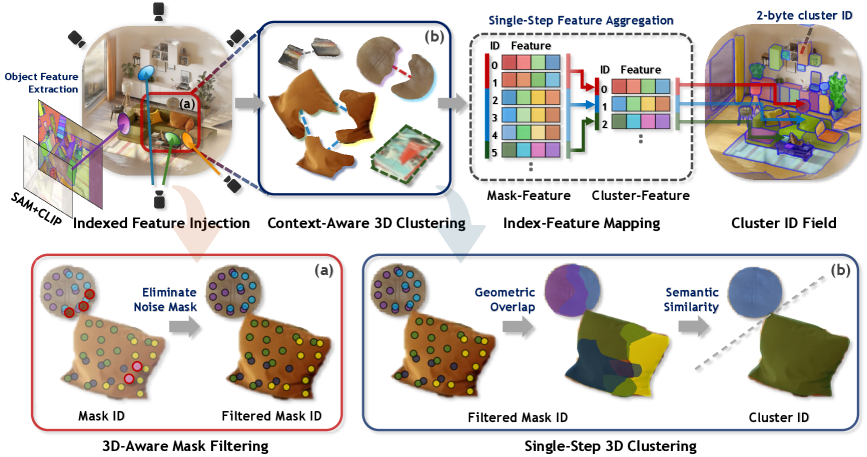
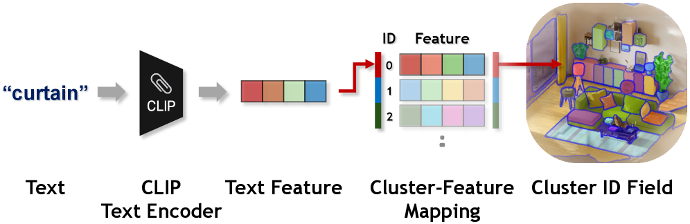
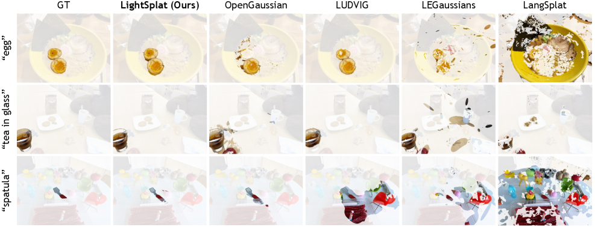
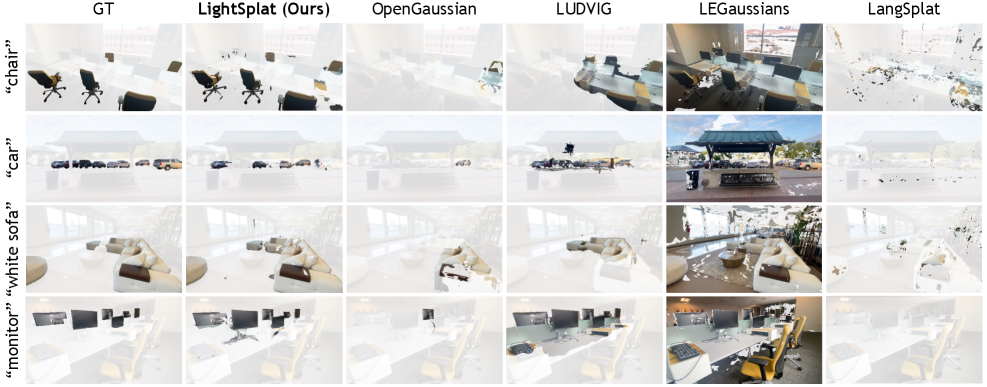
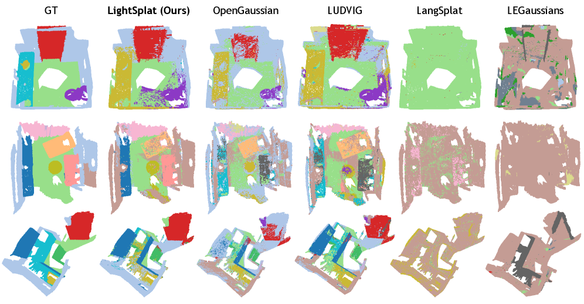

Open-vocabulary 3D scene understanding enables users to segment novel objects in complex 3D environments through natural language. However, existing approaches remain slow, memory-intensive, and overly complex due to iterative optimization and dense per-Gaussian feature assignments.
To address this, we propose LightSplat, a fast and memory-efficient training-free framework that injects compact 2-byte semantic indices into 3D representations from multi-view images. By assigning semantic indices only to salient regions and managing them with a lightweight index-feature mapping, LightSplat eliminates costly feature optimization and storage overhead.
We further ensure semantic consistency and efficient inference via single-step clustering that links geometrically and semantically related masks in 3D. We evaluate our method on LERF-OVS, ScanNet, and DL3DV-OVS across complex indoor-outdoor scenes, achieving state-of-the-art performance with up to 50-400× speedup and 64× lower memory.
The bottleneck is not just accuracy. Existing open-vocabulary 3D pipelines usually pay for semantics in the most expensive possible way: repeated optimization, dense language features on every Gaussian, and supervision that remains overly dependent on 2D rendering.
Repeated rendering and CLIP alignment turn feature distillation into the bottleneck.
Dense language features inflate storage and force expensive query-time comparisons.
Blurry rendered features weaken geometry-consistent semantics in 3D.
LightSplat directly links 2D semantics to 3D structure through compact mask indices. Instead of optimizing dense features on every Gaussian, it injects lightweight indices, filters unreliable masks, and groups related Gaussians into coherent 3D object clusters. This design enables efficient open-vocabulary 3D understanding without iterative training.

Figure 2. Overall framework of LightSplat. From multi-view images, we extract SAM masks and their corresponding CLIP features, then align them to the 3D scene through indexed feature injection. 3D-aware mask filtering removes unreliable masks, while index-feature mapping and context-aware 3D clustering build compact object-level representations for efficient, training-free open-vocabulary 3D scene understanding.
Collect SAM masks and CLIP features to build a clean 2D semantic inventory.
Assign only the most influential mask index instead of full language features.
Remove weak masks to suppress view-dependent artifacts and stabilize 3D semantics.
Combine geometric overlap and semantic similarity to form interpretable object-level clusters.

Figure 3. Fast inference via cluster-feature mapping. During inference, the text query is compared with a compact set of cluster features instead of all Gaussians or pixels, enabling fast retrieval with compact object-level representations.
Across LERF-OVS, DL3DV-OVS, and ScanNet, LightSplat combines strong 3D segmentation quality with low feature distillation cost, fast inference, and low memory overhead.
| Method | mIoU | mAcc @ 0.25 | FD Time | ||||||||
|---|---|---|---|---|---|---|---|---|---|---|---|
| Waldo | Ramen | Figurines | Teatime | Mean | Waldo | Ramen | Figurines | Teatime | Mean | ||
| LangSplat | 9.61 | 3.49 | 9.64 | 7.91 | 7.66 | 9.09 | 5.63 | 14.29 | 8.47 | 9.37 | 100 min |
| LEGaussians | 17.21 | 14.15 | 16.40 | 21.93 | 17.42 | 27.27 | 28.17 | 25.00 | 33.90 | 28.56 | 40 min |
| OpenGaussian | 30.96 | 24.02 | 55.38 | 58.24 | 42.15 | 45.45 | 28.17 | 75.00 | 76.27 | 56.22 | 50 min |
| LUDVIG | 28.08 | 29.33 | 47.43 | 52.28 | 39.28 | 51.33 | 50.36 | 67.02 | 85.72 | 63.61 | 10 min |
| Dr.Splat | 39.07 | 24.70 | 53.36 | 57.20 | 43.58 | 63.64 | 35.21 | 80.36 | 76.27 | 63.87 | 4 min |
| Ours | 34.95 | 45.07 | 50.63 | 59.65 | 47.58 | 59.09 | 57.75 | 76.79 | 79.66 | 68.32 | 4.2 s |
| Method | mIoU | mAcc @ 0.25 | FD Time | ||||||||
|---|---|---|---|---|---|---|---|---|---|---|---|
| Park | Shop | Road | Office | Mean | Park | Shop | Road | Office | Mean | ||
| LangSplat | 8.79 | 9.28 | 7.90 | 15.80 | 10.44 | 0.00 | 17.65 | 16.67 | 27.27 | 15.40 | 220 min |
| LEGaussians | 21.95 | 9.70 | 3.51 | 8.17 | 10.83 | 33.33 | 11.76 | 0.00 | 0.00 | 11.27 | 40 min |
| OpenGaussian | 29.65 | 19.51 | 41.59 | 6.78 | 24.38 | 41.67 | 35.29 | 66.67 | 0.00 | 35.91 | 60 min |
| LUDVIG | 37.03 | 33.56 | 27.68 | 18.58 | 29.21 | 70.00 | 56.75 | 53.57 | 47.22 | 56.89 | 12 min |
| Ours | 69.78 | 35.59 | 31.43 | 43.13 | 44.98 | 91.67 | 47.06 | 50.00 | 54.55 | 60.82 | 4.8 s |
| Method | 19 Classes | 15 Classes | 10 Classes | FD Time | Runtime(second) | Memory(byte) | |||
|---|---|---|---|---|---|---|---|---|---|
| mIoU | mAcc | mIoU | mAcc | mIoU | mAcc | ||||
| LangSplat | 2.61 | 10.11 | 4.08 | 13.22 | 6.30 | 20.48 | 40 min | 2.1 | 36 |
| LEGaussians | 1.62 | 7.26 | 5.72 | 14.23 | 9.84 | 19.13 | 50 min | 1.7 | 32 |
| OpenGaussian | 29.43 | 43.62 | 32.61 | 48.26 | 41.29 | 56.42 | 30 min | 0.003 | 24 |
| LUDVIG | 28.47 | 44.17 | 31.47 | 48.54 | 40.47 | 58.15 | 4 min | 0.006 | 2048 |
| Dr.Splat | 28.00 | 44.60 | 38.20 | 60.40 | 47.20 | 68.90 | 3 min | - | 128 |
| Ours | 37.11 | 58.66 | 39.78 | 60.91 | 47.78 | 68.21 | 4.1 s | 0.002 | 2 |
Qualitative results show that LightSplat preserves clean object boundaries, stable object identity, and broad scene coverage across small objects, repeated instances, and large spatial regions.

Figure 4. Qualitative comparison on LERF-OVS. Across different scenes and text queries, LightSplat produces detailed object boundaries while remaining substantially faster than prior methods.

Figure 5. Qualitative comparison on DL3DV-OVS. In large and complex indoor-outdoor scenes, LightSplat provides reliable selections and clear object boundaries, even when many similar objects appear in the same scene.

Figure 6. Qualitative comparison on ScanNet. LightSplat more effectively captures both object-level semantics and large-area regions, showing robust performance across diverse real-world scenes and text queries.
Each component contributes substantially to overall performance. Removing 3D-aware mask filtering, semantic-aware clustering, or geometry-aware clustering causes a large drop in accuracy, while FD Time remains nearly unchanged across variants.
| Variant | mIoU | Acc@0.25 | FD Time |
|---|---|---|---|
| Ours Full | 47.58 | 68.32 | 4.55 s |
| w/o 3D Mask Filtering | 29.31 | 25.96 | 4.54 s |
| w/o Semantic-Aware | 19.56 | 18.97 | 4.42 s |
| w/o Geometry-Aware | 2.01 | 2.27 | 4.44 s |
@misc{bang2026lightsplatfastmemoryefficientopenvocabulary,
title={LightSplat: Fast and Memory-Efficient Open-Vocabulary 3D Scene Understanding in Five Seconds},
author={Jaehun Bang and Jinhyeok Kim and Minji Kim and Seungheon Jeong and Kyungdon Joo},
year={2026},
eprint={2603.24146},
archivePrefix={arXiv},
primaryClass={cs.CV},
url={https://arxiv.org/abs/2603.24146}
}